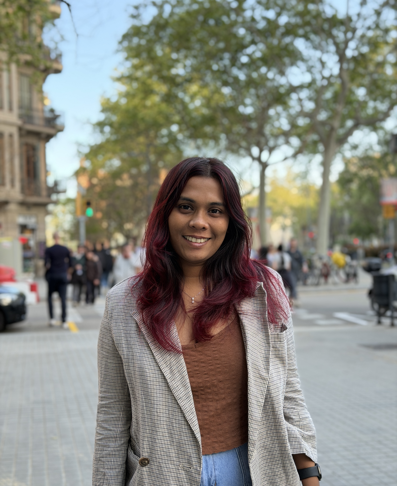

I am a PhD candidate at the National University of Singapore, working with Prof. Suranga Nanayakkara in the Augmented Human Lab.
My research sits at the intersection of Human–Computer Interaction and Applied AI, where I explore how intelligent systems can understand people through multimodal cues, interpret user context, and adapt their responses in real time. Ultimately, I aim to create wearable systems that feel less like tools and more like supportive partners.
More broadly, I enjoy building data-driven systems, spanning ML modeling, prototyping, and deployment that improve decision-making and everyday user experiences.
I am looking for collaborators and internship opportunities in applied AI, HCI, and wearable tech. If you have an idea or project that could use my skills, please reach out!
News
- April 2026 – Presenting our workshop paper at ABAW workshop in CVPR 2026, See you in Denver!
- Mar 2026 – We were placed third at the EMI challenge at ABAW workshop in CVPR 2026!
- Feb 2026 – Our paper “Interrupting Autopilot” was accepted to CHI LBW 2026. See you in Barcelona!
- Jan 2026 – Our Literature Review on User Aware Adaptive Assistive Wearables is in review at ACM computing Surveys!
- Feb 2025 – Our paper “VRSense” was accepted to CHI LBW 2025. See you in Japan!
- Sep 2024 – Started an internship via AHLab × Meta Reality Labs collaboration.
- Sep 2024 – Passed my Qualifying Examination. Now officially a PhD Candidate.
- Aug 2023 – Began my PhD at the National University of Singapore (NUS).
- Jan 2023 – Started Data Analytics consulting at LIRNEasia.
- May 2022 – Joined Axiata Digital Labs as a Data Engineer.
- Aug 2022 – Graduated with First Class Honors (Electronic & Telecommunication Engineering), University of Moratuwa.
- June 2022 – “CrossPoint” presented as a full paper at CVPR 2022.
- Oct 2022 – “3DLatNav” presented as a workshop paper at ECCV 2022.
Affiliations
Industry
Research Projects
Work Experience
Research Intern - Meta Reality Labs x Augmented Human Lab
Led multimodal XR user studies and predictive modeling for real-time cybersickness assessment.
- Led the design and execution of a large-scale VR gameplay user study (N=150), investigating motion sickness during active VR interactions.
- Collected and synchronized multimodal high-frequency data including eye tracking, head motion, and physiological signals in real-world XR settings.
- Developed machine learning models to predict real-time discomfort and cybersickness onset during gameplay.
- Built robust data pipelines for aligning heterogeneous sensor streams at scale.
- Translated model outputs into actionable insights for VR game evaluation on VR gaming platforms.
Data Engineer - Axiata Digital Labs
Built and productionized ML pipelines across telecom domains on cloud infrastructure.
- Engineered scalable ML/DL deployment pipelines for the company's AI Factory platform, supporting model development, testing, and production integration.
- Designed and maintained data ingestion and model integration workflows across multiple telecom business domains.
- Developed and deployed a customer churn prediction model with end-to-end pipelines, enabling data-driven decision making for enterprise clients.
- Worked across AWS and GCP environments to support reliable, production-grade ML systems.
- Collaborated with product and engineering teams to bridge research prototypes and real-world business applications.
Data Analytics Consultant - LIRNEasia
Delivered geospatial ML workflows and longitudinal datasets to support policy-focused analytics.
- Designed and implemented ML pipelines for classifying built-up regions from satellite imagery to support a national-scale urbanization index.
- Integrated geospatial workflows using QGIS and Google Earth Engine for automated spatial analysis and visualization.
- Built longitudinal datasets to study household energy consumption patterns across regions and time.
- Collaborated with policy researchers to translate data-driven findings into evidence-based insights for urban planning.